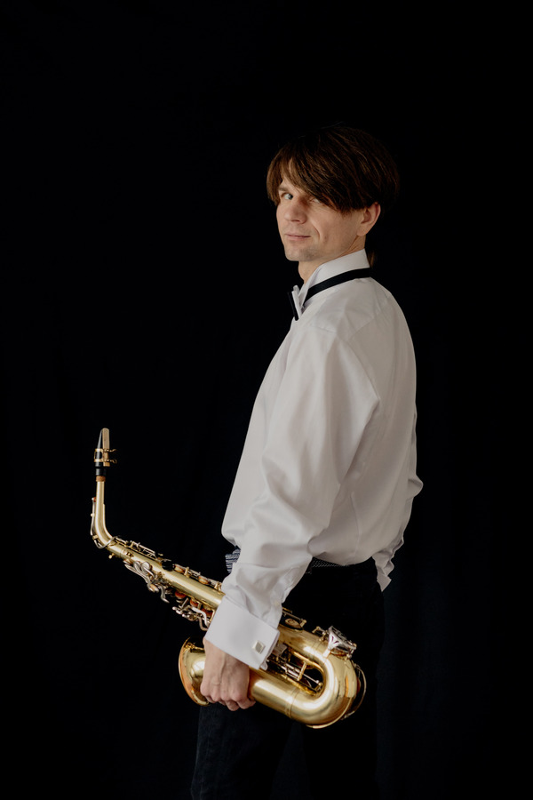
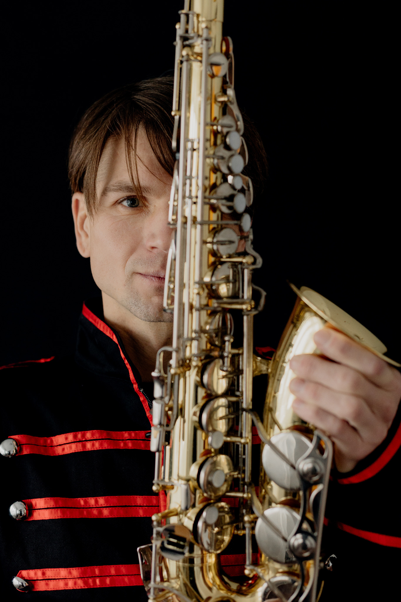
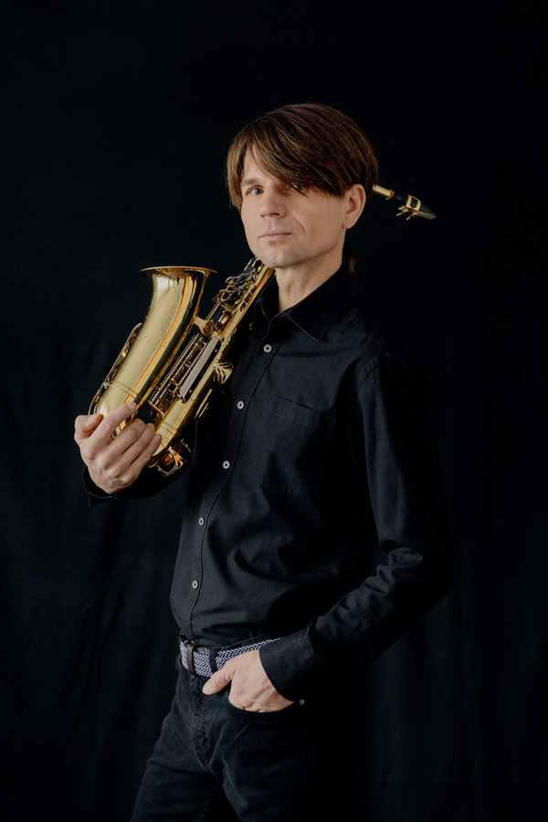
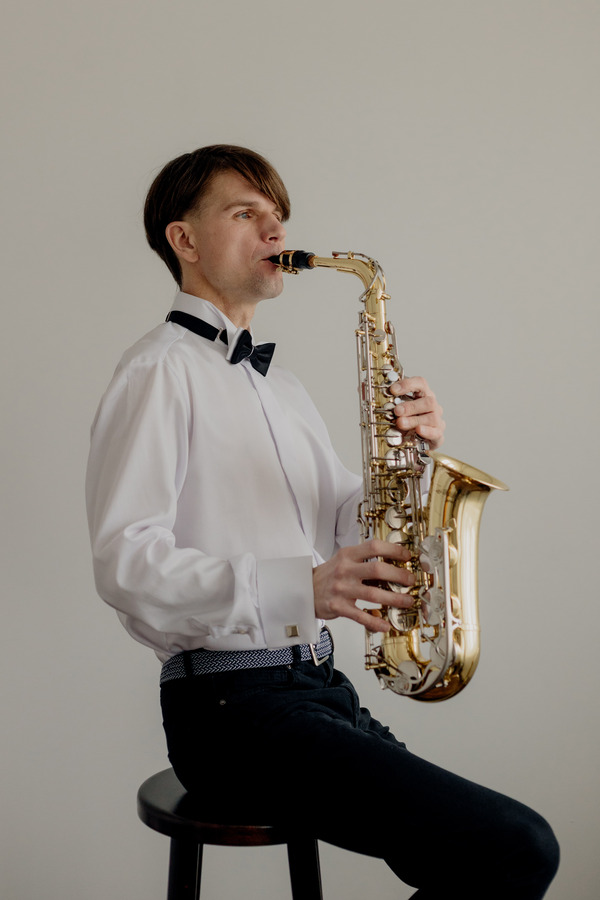
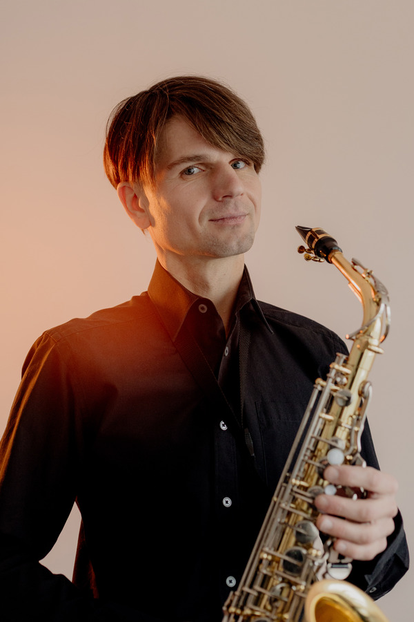
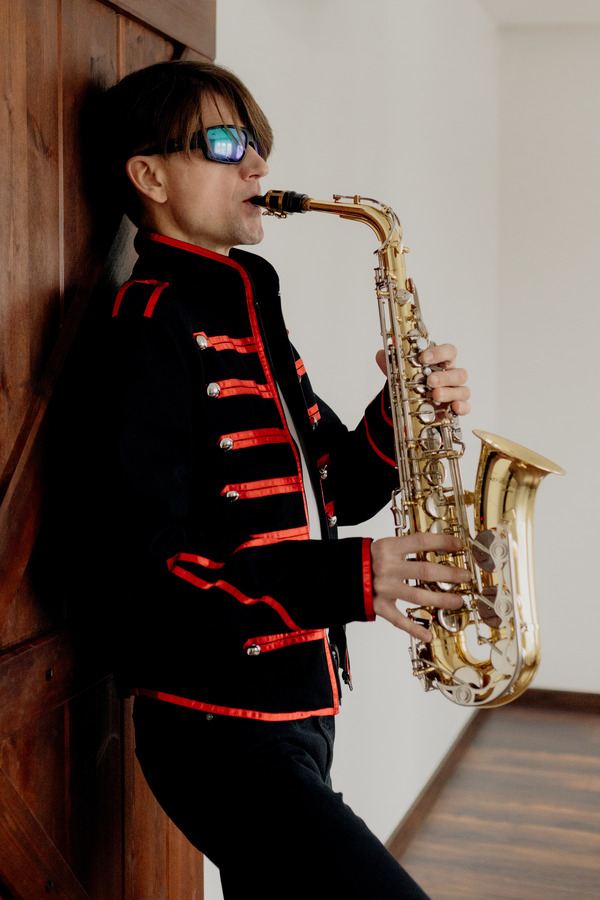
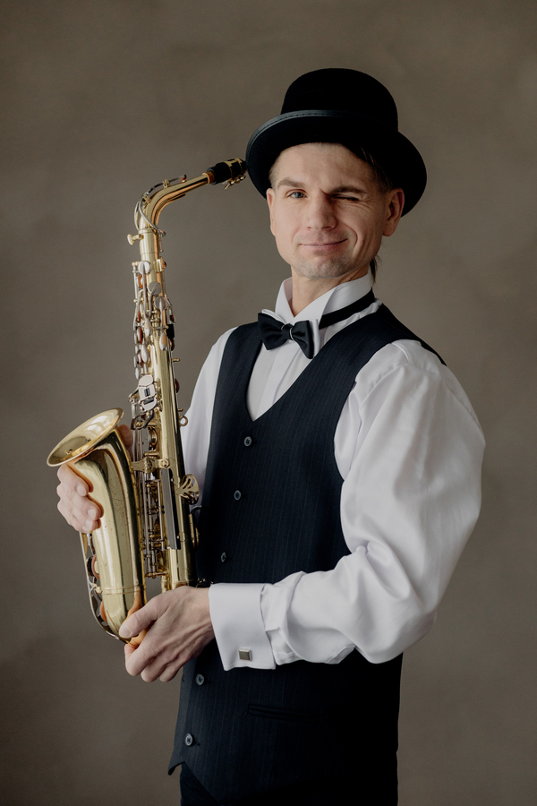
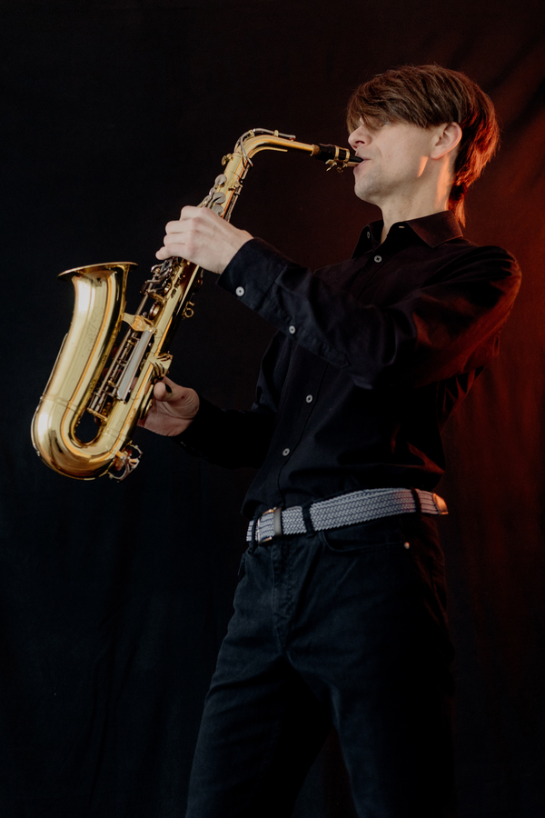
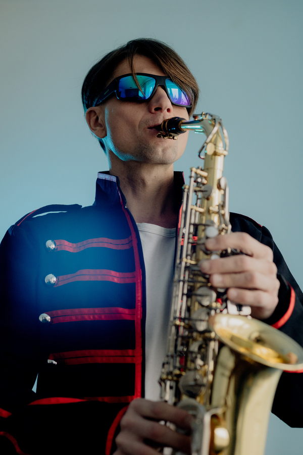
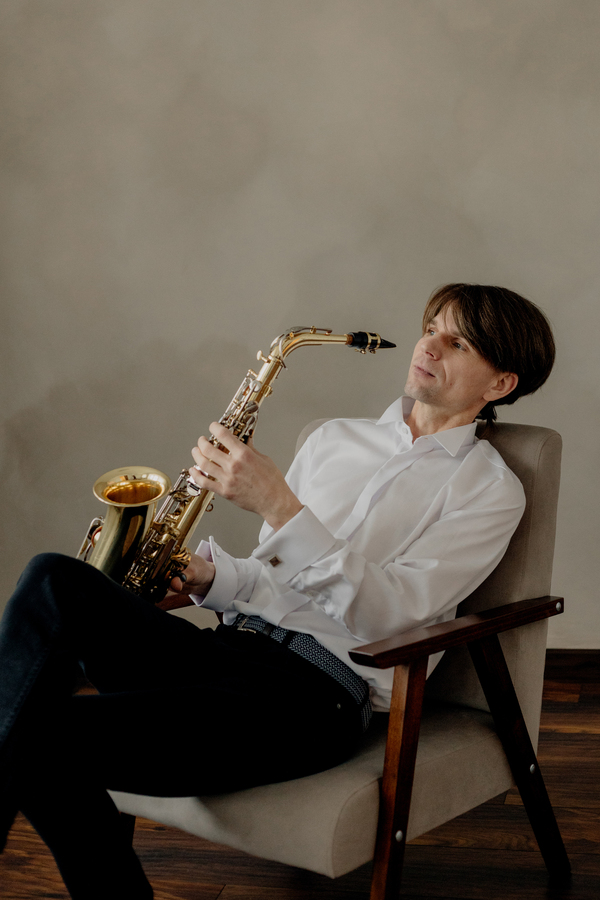

Wesela i uroczystości
Muzyczna oprawa wybranych momentów — od nastrojowych melodii po energetyczne wejścia i wyjścia.










Saksofonista · Muzyk
Muzyka, która zostaje.
Saksofon na żywo. Elegancja i emocje.
Wesela · Eventy firmowe · Przyjęcia · Koncerty
Kilka słów o mnie
To emocje, atmosfera i chwile, które zostają w pamięci.
Jestem Alek Volg — saksofonista, dla którego muzyka jest sposobem wyrażania siebie i komunikowania się ze światem. Wierzę, że dźwięk potrafi zmienić atmosferę miejsca, wywołać uśmiech i sprawić, że zwykła chwila staje się wyjątkowa.
Podczas występów dopasowuję muzykę do charakteru wydarzenia i ludzi, którzy je tworzą — od subtelnych, nastrojowych melodii po energetyczne rytmy.
Muzyka na różne okazje
Muzyczna oprawa wybranych momentów — od nastrojowych melodii po energetyczne wejścia i wyjścia.
Saksofon na spotkania firmowe, bankiety, kolacje i wydarzenia specjalne.
Muzyka na żywo, która tworzy klimat podczas prywatnych uroczystości i spotkań.
Występy dopasowane do miejsca, publiczności i charakteru wydarzenia.
Posłuchaj i poznaj mój styl
Odwiedź moje profile, zobacz nagrania i poznaj różne odsłony mojej muzycznej drogi. Wkrótce pojawią się tu również wybrane materiały wideo.
Porozmawiajmy o muzyce
Napisz lub zadzwoń — porozmawiamy o charakterze wydarzenia i muzyce, która będzie do niego pasować.